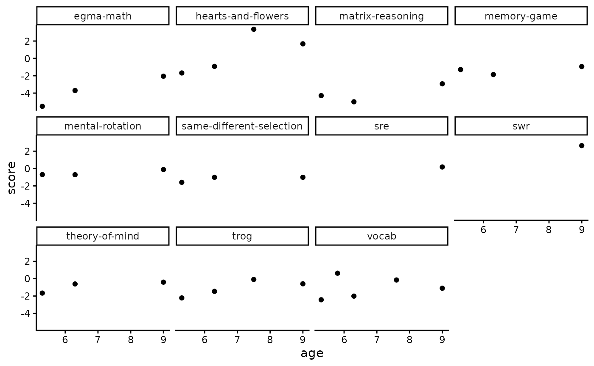

rlevante_walkthrough
rlevante_walkthrough.RmdBefore you begin this user walkthrough, please see our rlevante documentation for 1) how to install rlevante and 2) how to gain access to the data.
This walkthrough uses an example dataset of 15 participants (levante-data-example) for teaching purposes. Access to the example dataset requires creating an account and joining the LEVANTE organization on Redivis, a data-sharing platform. For more information, see our Researcher Site page on Data Access.
From Redivis to R
Permission to access the data is granted via Redivis, a data-sharing platform used for all LEVANTE datasets. Public releases of LEVANTE datasets on Redivis include at least four tables: participants, scores, surveys, and trials.
Table 1. Redivis tables commonly read into data frames by rlevante
| Name | Description | Additional information |
|---|---|---|
| participants | Information about child participants, where each row is a child participant. | |
| scores | Information about task ability scores across participants and tasks, where each row is a single score. | - Overview
of tasks - Guidelines for interpreting scores and details about scoring methods |
| surveys | Information about survey responses across participants and surveys, where each row is a single survey item response. | - Child
survey info - Caregiver survey info - Teacher survey info |
| trials | Information about trial level task responses across participants, tasks, and trials, where each row is a single trial-level response. | - Overview of tasks |
Using rlevante to load LEVANTE data
Each table from Redivis can be read into R as a data frame using a specific rlevante “get” function. Each “get” function takes at least two arguments, including a dataset name (required) and version number (defaults to the current version unless otherwise specified).
First, load rlevante and other packages, as needed.
library(rlevante)
library(dplyr)
#>
#> Attaching package: 'dplyr'
#> The following objects are masked from 'package:stats':
#>
#> filter, lag
#> The following objects are masked from 'package:base':
#>
#> intersect, setdiff, setequal, union
library(ggplot2)
theme_set(theme_classic())Then, use get_participants to obtain child participant
ids, approximate birthdates, and any associated caregiver or teacher
ids.
participants <- get_participants("levante-data-example:d0rt", version = "current")
#> Fetching data for levante-data-example:d0rt
#> --Fetching table participants
participants |> count(dataset, sort = TRUE)
#> # A tibble: 1 × 2
#> dataset n
#> <chr> <int>
#> 1 pilot_mpieva_de_main 15Use get_scores to obtain scored cognitive task data.
scores <- get_scores(data_source = "levante-data-example:d0rt")
#> Fetching data for levante-data-example:d0rt
#> --Fetching table scores
scores |> count(dataset, sort = TRUE)
#> # A tibble: 1 × 2
#> dataset n
#> <chr> <int>
#> 1 pilot_mpieva_de_main 33
scores |> count(task_id, sort = TRUE)
#> # A tibble: 11 × 2
#> task_id n
#> <chr> <int>
#> 1 vocab 5
#> 2 hearts-and-flowers 4
#> 3 trog 4
#> 4 egma-math 3
#> 5 matrix-reasoning 3
#> 6 memory-game 3
#> 7 mental-rotation 3
#> 8 same-different-selection 3
#> 9 theory-of-mind 3
#> 10 sre 1
#> 11 swr 1
ggplot(scores, aes(x = age, y = score)) +
facet_wrap(vars(task_id)) +
geom_point()
Use get_trials to access trial-level data.
trials <- get_trials("levante-data-example:d0rt")
#> Fetching data for levante-data-example:d0rt
#> --Fetching table trials
trials |> count(dataset, sort = TRUE)
#> # A tibble: 1 × 2
#> dataset n
#> <chr> <int>
#> 1 pilot_mpieva_de_main 1320
trials |> count(task_id, sort = TRUE)
#> # A tibble: 11 × 2
#> task_id n
#> <chr> <int>
#> 1 vocab 242
#> 2 hearts-and-flowers 236
#> 3 trog 153
#> 4 egma-math 124
#> 5 swr 120
#> 6 matrix-reasoning 106
#> 7 theory-of-mind 102
#> 8 same-different-selection 85
#> 9 mental-rotation 68
#> 10 memory-game 52
#> 11 sre 32Use get_surveys to access item-level survey data.
surveys <- get_surveys("levante-data-example:d0rt")
#> Fetching data for levante-data-example:d0rt
#> --Fetching table surveys
surveys |> count(dataset, sort = TRUE)
#> # A tibble: 1 × 2
#> dataset n
#> <chr> <int>
#> 1 pilot_mpieva_de_main 69Finally, researchers accessing their own LEVANTE data can use
get_raw_data to access additional tables within private
datasets.
administrations <- get_raw_table(table_name = "administrations", data_source = "levante-data-example-raw:bm7r")
#> Fetching data for levante-data-example-raw:bm7r
#> --Fetching table administrations
administrations |> count(public_name, sort = TRUE)
#> # A tibble: 18 × 2
#> public_name n
#> <chr> <int>
#> 1 Paket 1 2
#> 2 Paket 3 2
#> 3 Group3_Roar 1
#> 4 Group3_noR 1
#> 5 Paket 2 Group 2 1
#> 6 Paket 4 (kein Sprachtest) 1
#> 7 Paket 4 (mit Sprachtest) 1
#> 8 Paket 4 (mit Sprachtest) G2 1
#> 9 Paket2 1
#> 10 Retest_G1&2_Roar 1
#> 11 Retest_G3 1
#> 12 Retest_G3_R 1
#> 13 Retest_Group1 1
#> 14 Runde 1 (Nov 2025) 1
#> 15 Runde 2 (Januar 2026) 1
#> 16 Test_Group4_2 1
#> 17 Test_Group4_TP1 1
#> 18 Test_Survey_0825 1